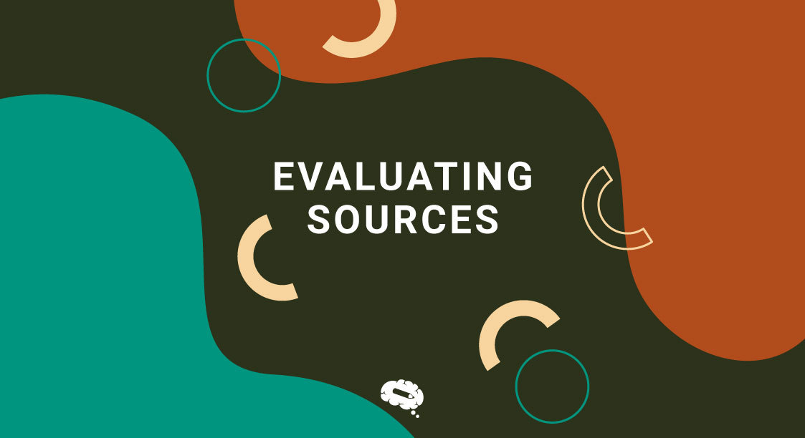

Source evaluation is the process of evaluating the source of information. It involves identifying the source of the information checking on how valuable the source is and how reliable it is.
We can use a method of checking called the CRAAP test to evaluate the source
• When was the information published or posted?
• Has the information been revised or updated?
• Does your topic require current information, or will older sources work as well?
• Are the links functional?
• Does the information relate to your topic or answer your question?
• Who is the intended audience?
• Is the information at an appropriate level (i.e. not too elementary or advanced for your needs)?
• Have you looked at a variety of sources before determining this is one you will use?
• Who is the author/publisher/source/sponsor?
• What are the author's credentials or organizational affiliations?
• Is the author qualified to write on the topic?
• Is there contact information, such as a publisher or email address?
• Does the URL reveal anything about the author or source?
• Where does the information come from?
• Is the information supported by evidence?
• Has the information been reviewed or refereed?
• Can you verify any of the information in another source or from personal knowledge?
• Does the language or tone seem unbiased and free of emotion?
• Are there spelling, grammar or typographical errors?
• What is the purpose of the information? Is it to inform, teach, sell, entertain or persuade?
• Do the authors/sponsors make their intentions or purpose clear?
• Is the information fact, opinion or propaganda?
• Does the point of view appear objective and impartial?
• Are there political, ideological, cultural, religious, institutional or personal biases?
This is the whole CRAAP test you can use it to evaluate sources for your research to see the reliability of it
Be sure to use this to test sources!